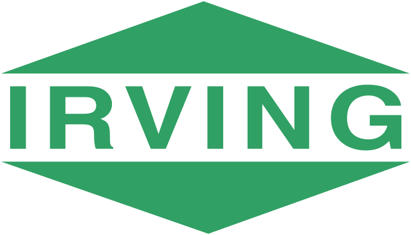

AI-Driven Employee Scheduling Software
Problem: Global factory scheduling was a manual process with near-infinite complexity (10136 combinations for a single 40-employee team). A business case I developed with Tesla's Finance Team identified a $55M/year opportunity on the Giga Texas Model Y line alone due to OEE losses from untrained assignments and $1.1M/year in wasted supervisor labor.
My Solution: I developed a constraint-based scheduling platform that automatically assigns Production Associates to workstations while enforcing strict safety, training, and ergonomic rotation rules. I drove the full 0→1 product lifecycle, translating complex operational constraints into a prioritized product roadmap. I built a functional MVP and led weekly stakeholder reviews with international teams to bridge the gap between Engineering and Operations. I personally developed the core optimization engine using Timefold (Java/Python), which outperformed the internal data engineering team's solution. To ensure scalability, I engineered a "Warm Start" server strategy that reduced generation latency by 95% (from 8.62s to 0.47s per team).
Results: Acting as the Technical Product Owner, I managed the backlog and rollout strategy for the transition to a full-stack engineering team, delivering comprehensive UI/UX specifications. Powered by my algorithm, this software is now used to schedule thousands of factory workers every day across Austin, Fremont, and Berlin, enforcing 100% training compliance.
Model Y & Cybertruck Process Design/Simulation Software
Problem: Designing new assembly processes for Model Y and Cybertruck relied on manual calculations and physical trials. Engineers lacked a unified tool to visualize spatial constraints (reach, walking distance) and temporal constraints (cycle time) before implementation, leading to costly line-side iteration.
My Solution: I engineered a simulation engine using Waypoint Logic to map spatial movements (lineside tools-to-vehicle) and integrated MODAPTS standards for precise timing analysis. I owned the full product lifecycle, from developing the initial MVP to leading User Acceptance Testing (UAT) with Process Engineers. I iterated on the UI/UX based on direct user feedback to ensure the tool met the rigorous demands of Tesla's Process Engineering teams.
Results: I successfully deployed the tool to 20+ Pilot and Process Engineers, establishing it as the standard for pre-production validation. By enabling a virtual "sandbox" for task rebalancing and tool placement, I eliminated the need for physical trial-and-error, reducing line-stop risks and accelerating new product introduction (NPI) cycles.
Model Y & Cybertruck Process Audit & Analytics Portal
Problem: Process Engineering data was fragmented across disparate systems. Engineers wasted hours manually cross-referencing the EBOM vs. MBOM and auditing Work Instructions for completeness (e.g., missing photos), creating a lag in root cause analysis for cycle time deviations.
My Solution: I developed a centralized Process Engineering Portal using Advanced SQL and Python (Pandas). I built automated ETL pipelines to cross-validate data between the internal Work Instruction software and the Manufacturing Execution System (MES). The system automatically flags discrepancies—such as BOM mismatches or missing instruction imagery—and visualizes real-time cycle time analytics via an internal BI dashboard.
Results: This portal became the single source of truth for the Model Y and Cybertruck Process Engineering teams. It automated the assignment of correction tasks to Manufacturing Technicians, ensuring work instructions are audit-ready, and enabled engineers to perform rapid root cause analysis on production bottlenecks without manual data scrubbing.
Sonar & Navigation Systems Integration
Problem: Integrating the Towed Low Frequency Active Sonar (TLFAS) and Hull Mounted Sonar (HMS) into the River-Class Destroyer presented massive physical and technical conflicts. The Ship Designer (BAE Systems) and the Sonar Vendor had misalignment regarding Interface Control Documents (ICDs), specifically regarding power requirements, cooling loads, and physical footprint constraints, risking the program's Critical Design Review (CDR).
My Solution: Acting as the Technical Integration Lead, I managed the requirements verification lifecycle for the underwater warfare suite. I chaired Cross-Functional Working Groups (CFWGs) with BAE Systems, the Royal Canadian Navy, and 3rd-party vendors to negotiate interface trade-offs. I performed detailed compliance gaps analysis against Lloyd’s Register and Naval Standards to validate that the physical ship design could support the acoustic performance requirements.
Results: My coordination de-risked the integration of the TLFAS and HMS systems. By securing stakeholder agreement on key Interface Control Documents, I closed open compliance gaps and ensured the sonar suite met all certification criteria on schedule for the program's design milestones.

Certifications Ingestion Automation Software
Problem: The multi-billion dollar River-Class Destroyer program faced critical delays in its certification lifecycle. Conflicting data formats and requirements from BAE Systems, Irving Shipbuilding, and Lloyd’s Register created a bottleneck, making it impossible to manually verify alignment with Royal Canadian Navy standards (ANEP-77) on schedule.
My Solution: Acting as the Product Owner for the certification workflow, I harmonized conflicting requirements across external stakeholders to define a unified data standard. I then engineered an automated compliance engine using Python (Pandas), SQL, and VBA to enforce these rules. My software acted as the gatekeeper for the program, automatically ingesting, validating, and rejecting thousands of certification line items based on the acceptance criteria I defined.
Results: I successfully deployed the solution to the Certifications Team, eliminating 4,450 hours of manual processing ($380,000) annually. By establishing a "Single Source of Truth," I ensured 100% audit traceability and accelerated the program's ability to meet Critical Design Review (CDR) milestones.
Mobile Fleet Dispatch & Routing App
Problem: The Transportation Division of J.D. Irving (a major North American logistics conglomerate) lacked real-time visibility into their trailer repair operations. Mechanics were driving blind across Eastern Canada, leading to high "wasted drive time" and expensive downtime for the customer's massive fleet. I identified this operational gap and self-started a product initiative to solve it.
My Solution: I engineered a geospatial algorithm using SQL & Python (Pandas) to ingest live truck bed locations and calculate the "Nearest & Most Urgent" work order for every mechanic. I packaged this logic into a live Power BI Mobile App, creating a user-friendly interface for field mechanics. I also led the change management effort, creating user guides to drive adoption.
Results: The app is now used daily by mechanics across Eastern Canada. It eliminated $60,000/year in wasted fuel/labor for the internal team and saved the customer an estimated $150,000–$300,000/year by significantly reducing trailer downtime.
River-Class Destroyer Program-Wide Jira Automation
Problem: As the Prime Systems Integrator, Lockheed Martin is responsible for delivering Technical Data Packages (TDPs) from vendors to BAE Systems (the Ship Designer). With ~80 different subsystems, there was no standardized way to track delivery status. Subsystem Leads created Jira Epics inconsistently, leaving Program Management blind to critical schedule risks.
My Solution: I acted as the Internal Product Owner for the TDP workflow. I conducted stakeholder interviews with IPT Leads and Engineering Program Managers (EPMs) to define a unified scheduling schema. Once the standard was set, I developed a VBA automation script that parses technical documents and bulk-imports standardized Epics/Tasks into Jira, ensuring consistent metadata across the program.
Results: This initiative standardized tracking for 80+ subsystems. By structuring the data at the source, I enabled the creation of real-time Tableau dashboards that provided leadership with the first-ever accurate view of TDP delivery status vs. the BAE design schedule.